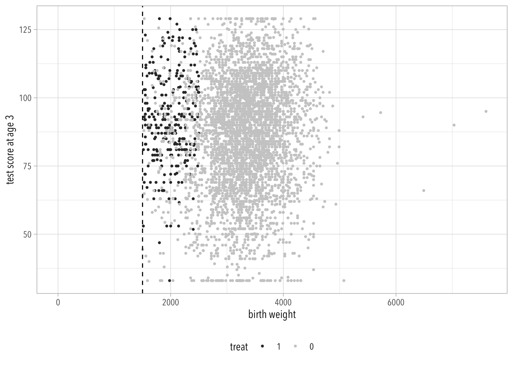
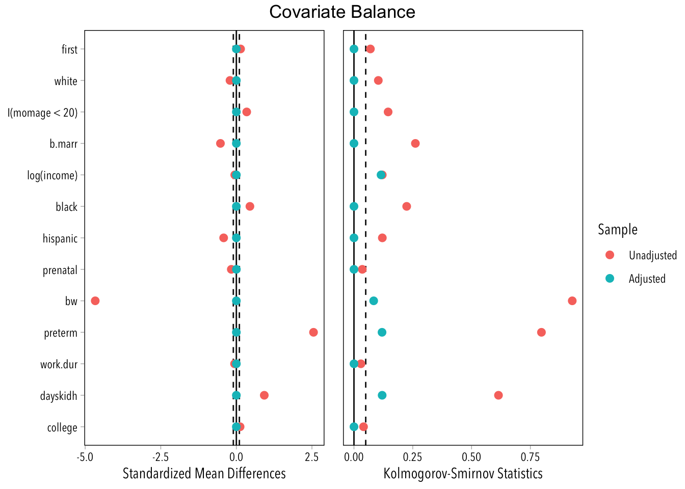

Data Dictionary for Child Care example
The IHDP intervention was implemented in the 1980’s and targeted low
birth weight (less than 2500 grams), pre-term children. They were
recruited at the time of birth. It provided high quality child care
and other services in their first 3 years of life. The comparison
group was pulled from a survey conducted during the same time period
called the National Survey of Longitudinal Youth. At the time of the
intervention many of the original survey participants (first recruited
in 1979) had children. We have data from those children and their
mothers for an overlapping set of variables (below) as the IHDP
children.
The intervention for low-birth-weight children is described by
- Brooks-Gunn, J., Liaw, F. R., and Klebanov, P. K. (1992). Effects of
early intervention on cognitive function of low birth weight preterm
infants. Journal of Pediatrics 120, 350–359.
- Hill, J. L., Brooks-Gunn, J., and Waldfogel, J. (2003). Sustained
effects of high participation in an early intervention for
low-birth-weight premature infants. Developmental Psychology 39,
730–744.
Data columns
"momage"
mom age at time of birth
"b.marr"
indicator for whether mom was married at birth
"momed"
mother’s education level at the time she gave birth
"work.dur"
indicator for whether mom worked in the year before she gave birth
"prenatal"
indicator for whether mom received prenatal care
"cig"
indicator for whether mom smoked cigarettes while pregnant
"booze"
indicator for whether mom drank alcohol while pregnant
"sex"
indicator for whether child was born male or female
"first"
indicator for whether child was the first born for the mother
"bw"
child’s birth weight
"bwg"
indicator for whether child was born low birth weight
"preterm"
number of weeks preterm child was born
"black", "hispanic", "white"
indicators for child’s race/ethnicity
"lths", "hs", "ltcoll", "college"
indicators for mother’s education at time of birth
"dayskidh"
number of days child was in the hospital after being born
"st5", "st9", "st12", "st25", "st36", "st42", "st48", "st53"
indicator for state where household resides
"st99"
indicator for whether family was living in state served by the ihdp
"income"
family income one year after the child was born
"treat"
indicator for whether family was allowed to receive IHDP services (1 = yes)
"ppvtr.36"
IQ measured at age 36 months
Gelman et al. (2020) say: We excluded the most severely low-birth-weight children (those at or below 1500 grams) from the sample because they are so different from the comparison sample.
Why did they decide to exclude these children? What problem could we encounter by not omitting them?
Would you have excluded them from the dataset? Why?
This question is hard because I am asking you to imagine what lies to the left of the following plot and to then get inside the author’s heads.
Code
d |>mutate(treat =as.factor(treat) |>fct_rev()) |>ggplot(aes(bw, ppvtr.36, color = treat)) +geom_point(size =2/3) +geom_vline(xintercept =1500, linetype ="dashed") +scale_color_grey() +xlim(0, max(d$bw)) +labs(x ="birth weight", y ="test score at age 3") +theme(legend.position ="bottom")

The authors decided to exclude these children because they believed they wouldn’t be able to get a credible ATT otherwise. There are some justifications for this decision. For example, it might simply be a case of lack of balance and common support. Lack of balance is a problem that we can solve with weighting, and I think it’s very improbable that there’s a lack of common support. This would mean that they are unnecessarily throwing away information based on what seems to be an arbitrary cut-off point.
However, it might be the case that such extremely low birth-weights are due to confounding circumstances for which there’s no good measurement available (e.g., a genetic disease). If this is the case, then throwing away the observations is probably the right call! Still, the strict weight cutoff should be justified on scientific grounds.
The authors would have to provide a more convincing justification.
Note. The lack of common support in this plot was part of the policy design.
19.3 Exercise
Looking at the variables, there is at least one variable for which it would be futile to try and achieve balance: st99 is an indicator for whether the family was living in state served by the IHDP. There shouldn’t be any families receiving treatment outside those states.
Code
d |>count(treat, st99) |>complete(treat, st99)
# A tibble: 4 × 3
treat st99 n
<dbl> <int> <int>
1 0 0 1173
2 0 1 2918
3 1 0 290
4 1 1 NA
Also note that this variable is coded weirdly, 1 indicates that there’s no IHDP presence! Other variables like bwg are also coded the opposite of what you would expect.
I am also skeptical that we can learn much from the other geographical variables. Including them would basically mean that we believe that geography is a confounder beyond what the other variables might tell us. I am sure you can come up with reasons for which this might be true, but I am skeptical. Furthermore, there are a lot of them and this will cause problems for achieving covariate balance.
This is how treatment is distributed across states.
Code
d |>group_by(treat) |>summarize(across(starts_with("st"), sum))
I will also exclude sex with the hopes that this is not relevant for the test scores of a 3 year old.
Note. I noticed this earlier, but I decided it was better to try and achieve balance on log(income) instead of income. There are some observations in the untreated group that have zero income, so I will delete these.
Code
d <- d |>filter(income >0)
19.4 Exercise
The first thing I did was to identify which variables were categorical and which were continuous. You can figure this out any number of ways, but I usually use skimr::skim(d).
I then used these to build formulas like we did in class.
Warning: The estimated weights do not balance the covariates, indicating the
optimization arrived at a degenerate solution. Try decreasing the number of
variables supplied to the optimization.
Warning: All weights are `NA` or 0 in treatment group "0".
Code
summary(ebalw)
Summary of weights
- Weight ranges:
Min Max
treated 1 || 1
control 0 || 0
- Units with the 5 most extreme weights by group:
5 4 3 2 1
treated 1 1 1 1 1
280 279 278 277 2106
control 0 0 0 0 0
- Weight statistics:
Coef of Var MAD Entropy # Zeros
treated 0 0 0 0
control 0 3864
- Effective Sample Sizes:
Control Treated
Unweighted 3864 276
Weighted 276
Hahaha, zero people in the (effective) control group.
Y’all, I think it’s time to rebuild the formulas and exclude the st* variables.
Warning: The estimated weights do not balance the covariates, indicating the
optimization arrived at a degenerate solution. Try decreasing the number of
variables supplied to the optimization.
Warning: All weights are `NA` or 0 in treatment group "0".
Code
love_plot(ebalw)
Error in `cobalt::love.plot()`:
! All weights are zero when treat is "0".
Ok, so this didn’t work either.
19.4.3 Last try
After some further trial and error, I realized that there are three variables particularly hard to balance: cig and booze.
Here I drop these variables and hope for the best. I also dropped education variables except for college and modified momage.
Code
ebalw <-weightit(formula = treat ~log(income) + first + black + hispanic + white + college + bw + b.marr + work.dur + prenatal +I(momage <20) + dayskidh + preterm,data = d,method ="ebal", estimand ="ATT",moments =3,maxit =1e6)
Warning: Some extreme weights were generated. Examine them with `summary()` and
maybe trim them with `trim()`.
Code
summary(ebalw)
Summary of weights
- Weight ranges:
Min Max
treated 1 || 1.0000
control 0 |---------------------------| 229.3099
- Units with the 5 most extreme weights by group:
5 4 3 2 1
treated 1 1 1 1 1
2321 2521 1070 770 2632
control 93.5336 98.7423 157.2057 163.6732 229.3099
- Weight statistics:
Coef of Var MAD Entropy # Zeros
treated 0.000 0.000 0.000 0
control 7.955 1.875 3.638 2774
- Effective Sample Sizes:
Control Treated
Unweighted 3864. 276
Weighted 60.13 276
Code
love_plot(ebalw)

These following results are very shaky. I tried closing the backdoor paths on cig and booze using regression (which is not something you were supposed to do). This means that we are using regression to extrapolate over areas where there’s little overlap and/or common support.
Code
fit_e <-lm(ppvtr.36~ treat, data = d, weights = ebalw$weights)fit_r <-lm(formula = ppvtr.36~ treat + dayskidh + income + preterm + momage + bw + b.marr + work.dur + prenatal + cig + booze + first + black + hispanic + white + lths + hs + ltcoll + college +I(momage^2), data = d)fit_double <-lm(formula = ppvtr.36~ treat + dayskidh + income + preterm + momage + bw + b.marr + work.dur + prenatal + cig + booze + first + black + hispanic + white + lths + hs + ltcoll + college +I(momage^2), data = d, weights = ebalw$weights)msummary(models =list("Regression"= fit_r, "Entropy"= fit_e, "Double R."= fit_double), coef_map ="treat",gof_map =c("rmse"))
Regression
Entropy
Double R.
treat
10.638
8.226
2.785
(1.397)
(1.357)
(1.250)
RMSE
16.38
20.17
28.48
Frustrating, I know.
Gelman, Andrew, Jennifer Hill, and Aki Vehtari. 2020. Regression and Other Stories. Cambridge University Press.
Source Code
---title: "Solutions 8"editor_options: chunk_output_type: console---```{r}#| code-summary: Packages and Helper Functions#| message: false# Packages ---library(tidyverse)library(modelsummary)library(broom)## Noah Greifer packageslibrary(cobalt)library(MatchIt)library(WeightIt)# Extra ---theme_set(theme_light(base_family ="Avenir Next Condensed"))love_plot <-function(x) { cobalt::love.plot(x, binary ="std" ,stats =c("m", "ks") ,thresholds =c(.1, .05),var.order ="adjusted" )}msummary <-function(...) { modelsummary::msummary(..., output ="gt") |> gt::opt_table_font(font ="Optima") |> gt::tab_options(quarto.disable_processing =TRUE)}```## DataThe **outcome** variable will be `ppvtr.36` (which simply means “test score at age 3”).**Dictionary**```{r}#| code-fold: truedict_url <-"https://raw.githubusercontent.com/avehtari/ROS-Examples/master/Childcare/data/datadict.txt"read_file(dict_url) |>writeLines()```**Loading the data**```{r}#| message: falsevar_names <-c("momage", "b.marr", "momed", "work.dur", "prenatal", "cig", "booze", "sex", "first", "bw", "bwg", "preterm", "black", "hispanic", "white", "lths", "hs", "ltcoll", "college", "dayskidh", "st5", "st9", "st12", "st25", "st36", "st42", "st48", "st53", "st99", "income", "treat", "ppvtr.36")url <-"https://raw.githubusercontent.com/avehtari/ROS-Examples/master/Childcare/data/cc2.csv"d <-read_csv(url) |>select(all_of(var_names)) |>mutate(across(matches("st\\d{2}"), as.integer))```## Exercise@gelman2020 say: *We excluded the most severely low-birth-weight children (those at or below 1500 grams) from the sample because they are so different from the comparison sample.**Why did they decide to exclude these children? What problem could we encounter by not omitting them?**Would you have excluded them from the dataset? Why?*This question is hard because I am asking you to imagine what lies to the left of the following plot and to then get inside the author's heads.```{r}d |>mutate(treat =as.factor(treat) |>fct_rev()) |>ggplot(aes(bw, ppvtr.36, color = treat)) +geom_point(size =2/3) +geom_vline(xintercept =1500, linetype ="dashed") +scale_color_grey() +xlim(0, max(d$bw)) +labs(x ="birth weight", y ="test score at age 3") +theme(legend.position ="bottom") ```The authors decided to exclude these children because they believed they wouldn't be able to get a credible ATT otherwise. There are some justifications for this decision. For example, it might simply be a case of lack of balance and common support. Lack of balance is a problem that we can solve with weighting, and I think it's very *improbable* that there's a lack of common support. This would mean that they are unnecessarily throwing away information based on what seems to be an arbitrary cut-off point.*However*, it might be the case that such extremely low birth-weights are due to confounding circumstances for which there's no good measurement available (e.g., a genetic disease). If this is the case, then throwing away the observations is probably the right call! Still, the strict weight cutoff should be justified on scientific grounds.The authors would have to provide a more convincing justification.*Note. The lack of common support in this plot was part of the policy design*.## ExerciseLooking at the variables, there is at least one variable for which it would be futile to try and achieve balance: `st99` is an indicator for whether the family was living in state served by the IHDP. There shouldn't be any families receiving treatment outside those states.```{r}d |>count(treat, st99) |>complete(treat, st99)```Also note that this variable is coded weirdly, 1 indicates that there's no IHDP presence! Other variables like `bwg` are also coded the opposite of what you would expect.I am also skeptical that we can learn much from the other geographical variables. Including them would basically mean that we believe that geography is a confounder beyond what the other variables might tell us. I am sure you can come up with reasons for which this might be true, but I am skeptical. Furthermore, there are a lot of them and this will cause problems for achieving covariate balance.This is how treatment is distributed across states.```{r}d |>group_by(treat) |>summarize(across(starts_with("st"), sum))```I also see no reason to use `bwg` when we already have a more informative `bw` variable.Finally, it seems to me that `momed` and `lths`, `hs`, `ltcoll`, `college` contain the same information.```{r}d |>count(momed, lths, hs, ltcoll, college)```Yup, we *must* exclude `momed` too!I will also exclude `sex` with the hopes that this is not relevant for the test scores of a 3 year old.*Note. I noticed this earlier, but I decided it was better to try and achieve balance on `log(income)` instead of `income`. There are some observations in the untreated group that have zero income, so I will delete these.*```{r}d <- d |>filter(income >0)```## ExerciseThe first thing I did was to identify which variables were categorical and which were continuous. You can figure this out any number of ways, but I usually use `skimr::skim(d)`.I then used these to build formulas like we did in class.```{r}num_vars <-c("dayskidh", "income", "preterm", "momage", "bw")st_vars <-c("st5", "st9", "st12", "st25", "st36", "st42", "st48", "st53")bin_vars <-c("b.marr", "prenatal", "cig", "booze", "first", "black", "hispanic", "white", "lths", "hs", "ltcoll", "college")f_linear <-reformulate(response ="treat",termlabels =c(num_vars, st_vars, bin_vars))f_quadratic <-reformulate(response ="treat",termlabels =c(num_vars, st_vars, bin_vars, "I(momage^2)", "I(prenatal^2)"))```From here on there is a lot of trial-and-error. I've included a bunch of stuff that normally wouldn't go here, but I just want you see for yourselves### First try, with `st` variables```{r}psw <-weightit(formula = f_quadratic, data = d, method ="glm", estimand ="ATT")summary(psw)```Furthermore, it's all very much out of balance.```{r}love_plot(psw)```I will try CBPS now.```{r}cbpsw <-weightit(formula = f_quadratic, data = d, method ="CBPS", estimand ="ATT")love_plot(cbpsw)```Well, that didn't work either...I'll try the non over identified version of CBPS.```{r}cbpsw <-weightit(formula = f_quadratic, data = d, method ="CBPS", estimand ="ATT",over =FALSE)love_plot(cbpsw)```Still no good...I will give entropy balancing one chance, but I highly doubt it will work.```{r}ebalw <-weightit(formula = f_linear, data = d, method ="ebal", estimand ="ATT",moments =3)summary(ebalw)```Hahaha, zero people in the (effective) control group.Y'all, I think it's time to rebuild the formulas and exclude the `st*` variables.### Second try```{r}#| error: truenum_vars <-c("dayskidh", "income", "preterm", "momage", "bw")bin_vars <-c("b.marr", "work.dur", "prenatal", "cig", "booze", "first", "black", "hispanic", "white", "lths", "hs", "ltcoll", "college")f_linear <-reformulate(response ="treat",termlabels =c(num_vars, bin_vars))f_quadratic <-reformulate(response ="treat",termlabels =c(num_vars, bin_vars, "I(momage^2)"))psw <-weightit(formula = f_quadratic, data = d, method ="glm", estimand ="ATT")love_plot(psw)cbpsw <-weightit(formula = f_quadratic, data = d, method ="CBPS", estimand ="ATT",over =TRUE)love_plot(cbpsw)cbpsw <-weightit(formula = f_quadratic, data = d, method ="CBPS", estimand ="ATT",over =FALSE)love_plot(cbpsw)ebalw <-weightit(formula = f_linear, data = d, method ="ebal", estimand ="ATT",moments =2)love_plot(ebalw)```Ok, so this didn't work either.### Last tryAfter some further trial and error, I realized that there are three variables particularly hard to balance: `cig` and `booze`.Here I drop these variables and hope for the best. I also dropped education variables except for `college` and modified `momage`.```{r}ebalw <-weightit(formula = treat ~log(income) + first + black + hispanic + white + college + bw + b.marr + work.dur + prenatal +I(momage <20) + dayskidh + preterm,data = d,method ="ebal", estimand ="ATT",moments =3,maxit =1e6) summary(ebalw)love_plot(ebalw)```These following results are very shaky. I tried closing the backdoor paths on `cig` and `booze` using regression (which is not something you were supposed to do). This means that we are using regression to *extrapolate* over areas where there's little overlap and/or common support.```{r}fit_e <-lm(ppvtr.36~ treat, data = d, weights = ebalw$weights)fit_r <-lm(formula = ppvtr.36~ treat + dayskidh + income + preterm + momage + bw + b.marr + work.dur + prenatal + cig + booze + first + black + hispanic + white + lths + hs + ltcoll + college +I(momage^2), data = d)fit_double <-lm(formula = ppvtr.36~ treat + dayskidh + income + preterm + momage + bw + b.marr + work.dur + prenatal + cig + booze + first + black + hispanic + white + lths + hs + ltcoll + college +I(momage^2), data = d, weights = ebalw$weights)msummary(models =list("Regression"= fit_r, "Entropy"= fit_e, "Double R."= fit_double), coef_map ="treat",gof_map =c("rmse"))```Frustrating, I know.